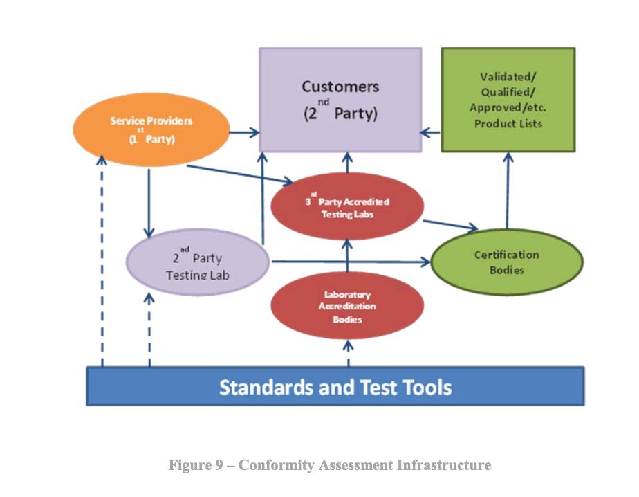
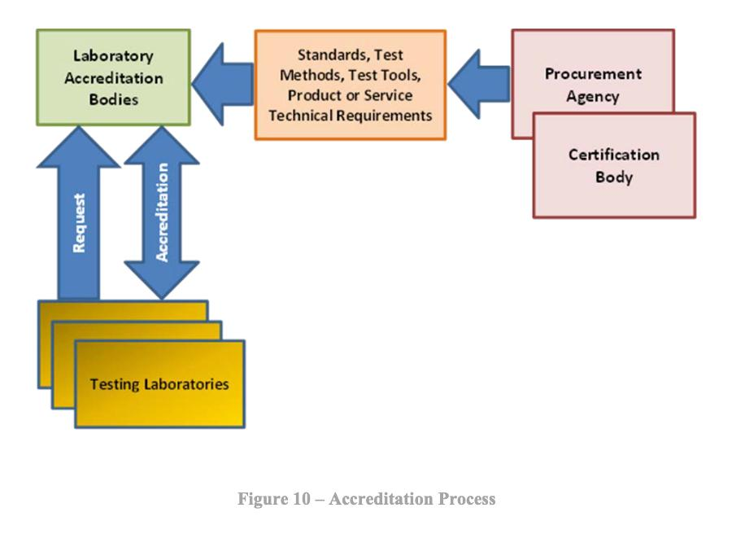
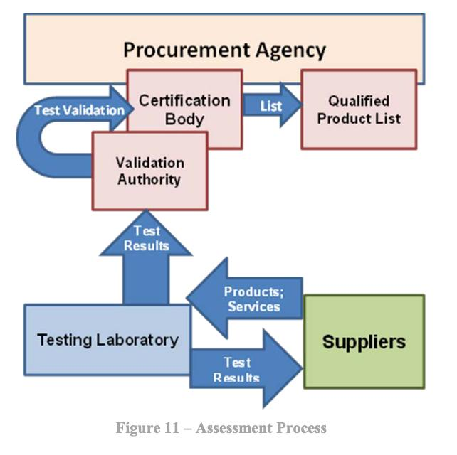

Conformity assessment activities form a crucial link between standards, which define necessary characteristics or requirements, and the products, services, and systems. These activities enable buyers, sellers, consumers, and regulators to have confidence that products and systems meet specific requirements. In the context of cloud computing, features like on-demand self-service and resource pooling require special approaches to conformity assessment, due to privacy concerns and the shared nature of resources.
Conformity assessment procedures ensure that products, services, systems, or entities possess specific required characteristics and maintain consistency across them. These procedures may include declarations of conformity, testing, inspection, certification, accreditation, and more. Conformity assessment can be performed by suppliers (first-party), purchasers (second-party), independent bodies (third-party), or the government. The process helps verify that products meet required standards but can add costs and time to development, especially in rapidly advancing technological fields.
Federal conformity assessment activities provide assurance that products, services, and systems regulated or purchased by federal agencies meet required standards. The NTTAA directs NIST to coordinate conformity assessment efforts across federal, state, and local levels with the private sector, aiming to reduce duplication and complexity. By leveraging private-sector programs, agencies can reduce implementation costs and foster innovation. Many federal agencies, with NIST’s support, engage in conformity assessment to design and implement effective programs.
Figure 9 – Conformity Assessment Infrastructure provides an overview of the range of activities that can occur in conformity assessment and the relationships between them.
Figure 10 – Accreditation Process shows the relationships for the laboratory accreditation process. The key aspect of the process is the identification of the standards, test methods, test tools, and other technical requirements by the procurement agency as they apply to the products, services, systems, etc., to be tested.
An example of a conformity assessment system involves accredited testing laboratories and certification. The process begins with the supplier submitting the product, service, or system to a third-party accredited laboratory for testing. The results are then reviewed by the supplier and sent to a validation authority for approval. If the validation authority and the qualified products list (QPL) owner approve, the product, service, or system is officially listed.
Cloud computing-specific standards are starting to emerge, and conformity assessment and conformance testing processes are being developed by various organizations. For certain standards, such as CDMI, OCCI, OVF, and CIMI, industry-sponsored testing events with participation from vendors and developers are being conducted. However, in some cases, the standards are not yet mature enough for testing, or the conformity assessment processes have not been made public.
Volver al índice principal